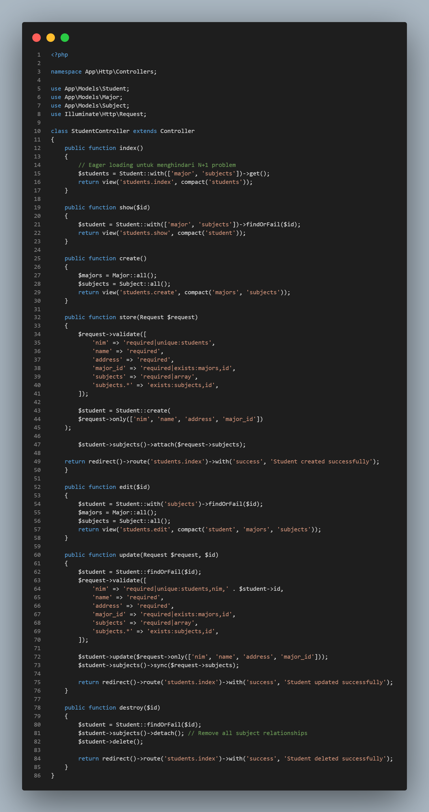
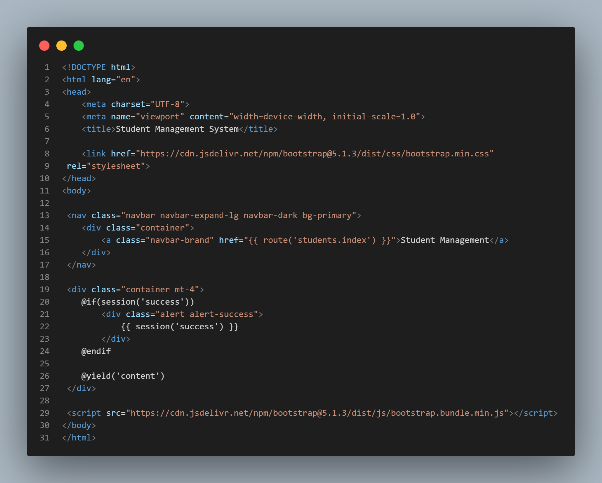
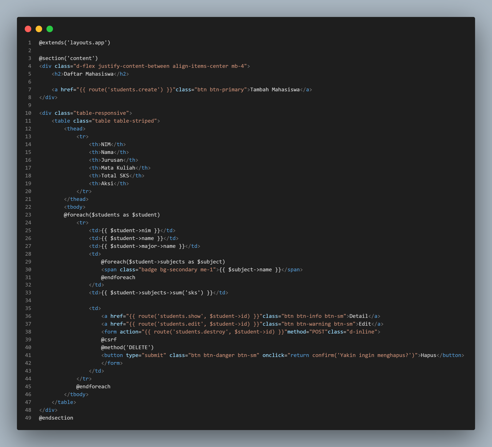
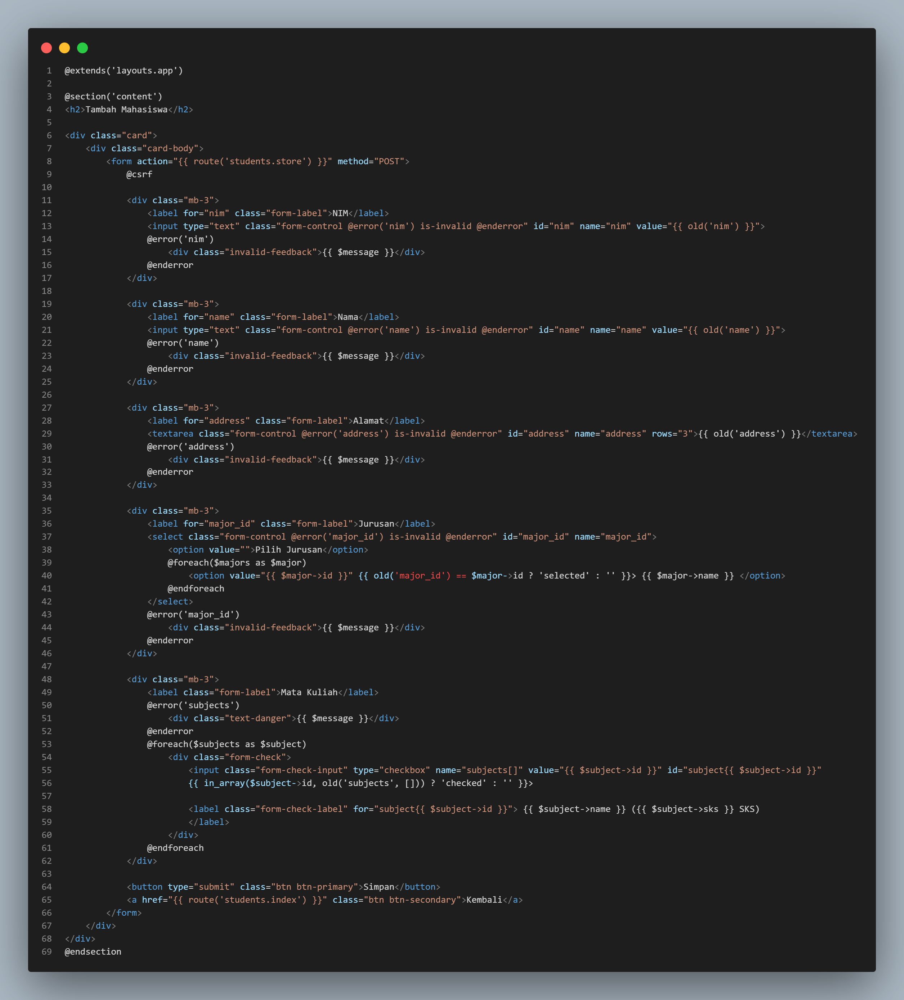
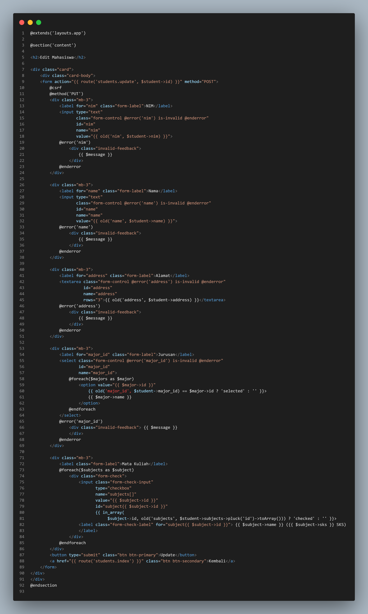
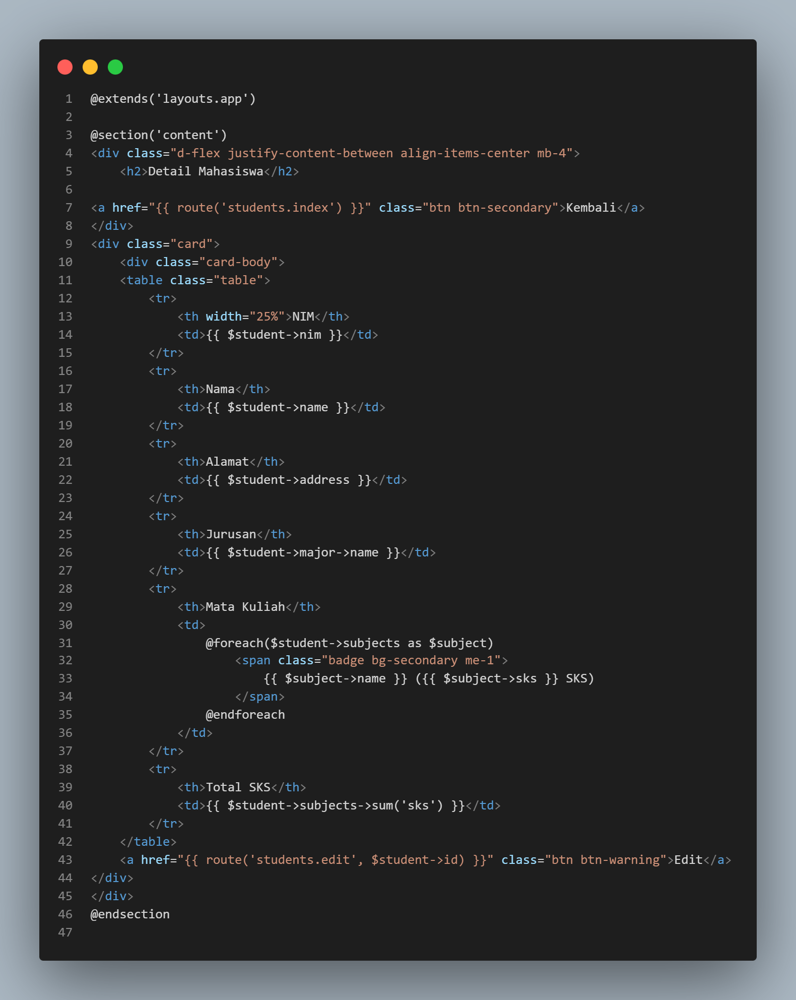
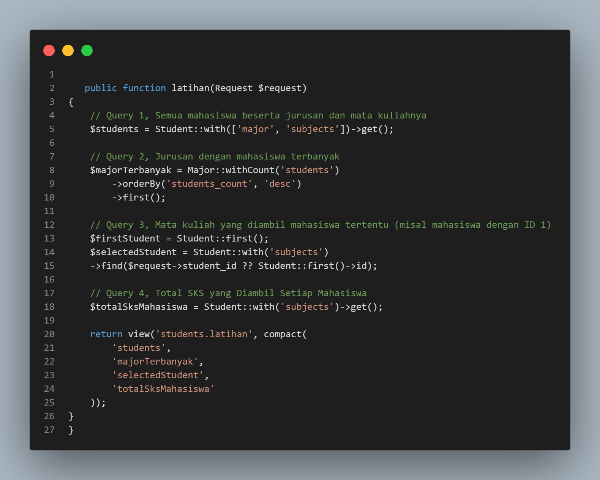
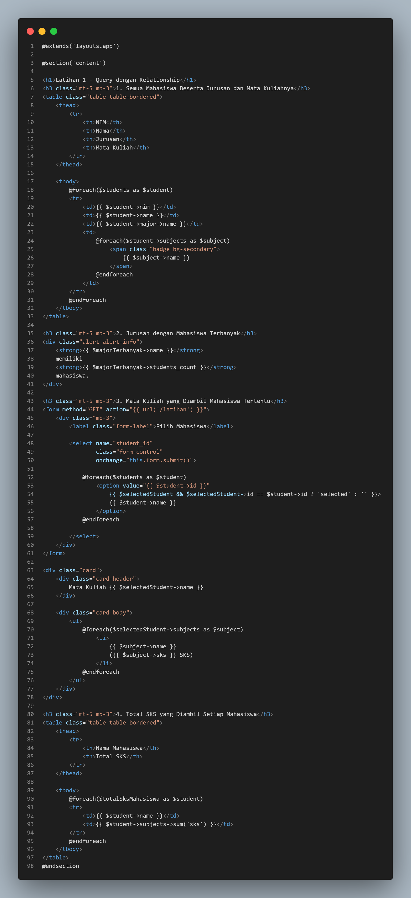

Laporan Praktikum 8 - Pemrograman Web
Laravel Relationships
IF - Universitas Andalas
A. Pendahuluan
Laravel Relationships merupakan fitur pada Eloquent ORM yang digunakan untuk menghubungkan data antar tabel dalam database sehingga data yang saling berkaitan dapat dikelola dengan lebih mudah. Pada praktikum ini digunakan relationship antara tabel Student, Major, dan Subject.
One-to-Many Relationship adalah hubungan di mana satu data dapat memiliki banyak data terkait. Pada praktikum ini, satu jurusan (Major) dapat memiliki banyak mahasiswa (Student). Sebaliknya, Many-to-One Relationship merupakan kebalikan dari One-to-Many, yaitu banyak mahasiswa dapat berasal dari satu jurusan. Relationship ini diimplementasikan menggunakan method hasMany() pada model Major dan belongsTo() pada model Student.
Selain itu, digunakan Many-to-Many Relationship antara mahasiswa dan mata kuliah. Seorang mahasiswa dapat mengambil banyak mata kuliah, dan satu mata kuliah dapat diambil oleh banyak mahasiswa. Relationship ini menggunakan tabel penghubung (pivot table) student_subject dan diimplementasikan dengan method belongsToMany().
Implementasi relationship dalam Laravel didukung oleh penggunaan foreign key sebagai penghubung antar tabel serta Eloquent ORM untuk mempermudah pengelolaan dan pengambilan data yang saling berelasi.
B. Tujuan Praktikum
Setelah menyelesaikan praktikum ini, mahasiswa diharapkan mampu:
- Memahami konsep relationship dalam Laravel.
- Mengimplementasikan One-to-Many dan Many-to-Many relationship.
- Membuat migration dengan foreign key.
- Menggunakan Eloquent relationship untuk query data.
- Menampilkan data dengan relationship di view.
C. Langkah-langkah Praktikum
Buat 4 buah Migration untuk tabel majors, students, subjects, dan tabel pivot student_subject.
1. Migration Tabel MajorsJalankan perintah berikut di terminal untuk membuat file migration.
php artisan make:migration create_majors_table

Setelah berhasil dibuat, masuk ke file migration tersebut dan sesuaikan dengan gambar berikut

Pada migration tabel majors terdapat field id, name, dan timestamps untuk menyimpan waktu create dan update data.
2. Migration Tabel StudentsJalankan perintah berikut di terminal untuk membuat file migration.
php artisan make:migration create_students_table

Setelah berhasil dibuat, masuk ke file migration tersebut dan sesuaikan dengan gambar berikut

Pada migration tabel students terdapat field id, nim, name, address, major_id, dan timestamps.
3. Migration Tabel SubjectsJalankan perintah berikut di terminal untuk membuat file migration.
php artisan make:migration create_subjects_table

Setelah berhasil dibuat, masuk ke file migration tersebut dan sesuaikan dengan gambar berikut

Pada migration tabel subjects terdapat field id, name, sks, dan timestamps.
4. Migration Tabel Pivot student_subjectJalankan perintah berikut di terminal untuk membuat file migration.
php artisan make:migration create_student_subject_table

Setelah berhasil dibuat, masuk ke file migration tersebut dan sesuaikan dengan gambar berikut

Pada migration tabel pivot student_subject terdapat field id, student_id, subject_id, dan timestamps. Field student_id dan subject_id merupakan foreign key yang menghubungkan tabel students dan subjects.
5. Jalankan MigrationSetelah semua file migration berhasil dibuat dan disesuaikan, jalankan perintah berikut di terminal untuk menjalankan semua migration dan membuat tabel pada database.
php artisan migrate

Selanjutnya buat 3 model yaitu Major, Student, dan Subject, dengan relationship yang sesuai.
1. Model MajorJalankan perintah berikut di terminal untuk membuat file model Major.
php artisan make:model Major

Setelah file model berhasil dibuat, buka file Major.php yang berada pada folder app/Models lalu sesuaikan dengan gambar berikut.

Menambahkan method students() yang mendefinisikan relationship One-to-Many dengan model Student menggunakan hasMany().
2. Model StudentJalankan perintah berikut di terminal untuk membuat file model Student.
php artisan make:model Student

Setelah file model berhasil dibuat, buka file Student.php yang berada pada folder app/Models lalu sesuaikan dengan gambar berikut.

Menambahkan method major() yang mendefinisikan relationship Many-to-One dengan model Major menggunakan belongsTo(), serta method subjects() yang mendefinisikan relationship Many-to-Many dengan model Subject menggunakan belongsToMany().
3. Model SubjectJalankan perintah berikut di terminal untuk membuat file model Subject.
php artisan make:model Subject

Setelah file model berhasil dibuat, buka file Subject.php yang berada pada folder app/Models lalu sesuaikan dengan gambar berikut.

Menambahkan method students() yang mendefinisikan relationship Many-to-Many dengan model Student menggunakan belongsToMany().
Setelah model-model tersebut dibuat, buat 3 Seeder untuk mengisi data awal. Pada MajorSeeder, StudentSeeder, dan SubjectSeeder
1. MajorSeeder (Seeder untuk Data Major)Jalankan perintah berikut di terminal untuk membuat file seeder Major.
php artisan make:seeder MajorSeeder

Setelah file seeder berhasil dibuat, buka file MajorSeeder.php yang berada pada folder database/seeders lalu sesuaikan dengan gambar berikut.

Menambahkan data jurusan seperti Teknik Informatika, Sistem Informasi, dan Teknik Elektro menggunakan Major::create().
2. StudentSeeder (Seeder untuk Data Student)Jalankan perintah berikut di terminal untuk membuat file seeder Student.
php artisan make:seeder StudentSeeder

Setelah file seeder berhasil dibuat, buka file StudentSeeder.php yang berada pada folder database/seeders lalu sesuaikan dengan gambar berikut.

Menambahkan data mahasiswa beserta relasi dengan jurusan dan mata kuliah menggunakan Student::create(), Major::find(), dan Subject::find().
3. SubjectSeeder (Seeder untuk Data Subject)Jalankan perintah berikut di terminal untuk membuat file seeder Subject.
php artisan make:seeder SubjectSeeder

Setelah file seeder berhasil dibuat, buka file SubjectSeeder.php yang berada pada folder database/seeders lalu sesuaikan dengan gambar berikut.

Menambahkan data mata kuliah seperti Pemrograman Web, Basis Data, dan Jaringan Komputer menggunakan Subject::create().
4. Update DatabaseSeederSetelah semua seeder berhasil dibuat, buka file DatabaseSeeder.php yang berada pada folder database/seeders lalu daftarkan semua seeder yang telah dibuat dengan menambahkan syntax berikut.
$this->call([
StudentSeeder::class,
MajorSeeder::class,
SubjectSeeder::class
]);

Dengan mendaftarkan seeder pada DatabaseSeeder.php, maka saat menjalankan perintah db:seed semua seeder yang telah didaftarkan akan otomatis dijalankan.
5. Jalankan SeederSetelah semua file seeder berhasil dibuat dan disesuaikan, jalankan perintah berikut di terminal untuk menjalankan semua seeder dan mengisi data pada tabel di database.
php artisan db:seed

Controller bertugas menerima request dari pengguna, berinteraksi dengan model untuk mengambil atau menyimpan data, lalu mengirimkan data tersebut ke view untuk ditampilkan. Resource Controller secara otomatis menyediakan 7 method standar CRUD.
1. StudentControllerJalankan perintah berikut di terminal untuk membuat file controller Student.
php artisan make:controller StudentController
Setelah file controller berhasil dibuat, buka file StudentController.php yang berada pada folder app/Http/Controllers lalu sesuaikan dengan gambar berikut.

Berisi 7 method lengkap yaitu:
- index() menggunakan Student::with(['major','subjects'])->get() untuk eager loading
- show() menggunakan Student::with(['major','subjects'])->findOrFail($id) untuk menemukan data tertentu
- create() menampilkan form untuk membuat data baru
- store() menyimpan data baru
- edit() menampilkan form untuk mengedit data yang sudah ada
- update() memperbarui data yang sudah ada
- destroy() untuk menghapus data
Buka file web.php yang berada pada folder routes, lalu tambahkan route resource untuk StudentController dengan syntax berikut.
Route::resource('students', StudentController::class);

Dengan menambahkan route resource, maka secara otomatis akan tersedia route untuk semua method CRUD pada StudentController.
Pertama buat layout utama yang menggunakan Bootstrap 5 dengan navbar, kemudian dibuat view untuk halaman daftar mahasiswa, form tambah, dan form edit.
1. Layout UtamaBuat file app.blade.php pada folder resources/views/layouts, lalu sesuaikan dengan gambar berikut.

Layout utama ini menggunakan Bootstrap 5 untuk styling dan memiliki navbar dengan link ke halaman daftar mahasiswa, form tambah, dan form edit.
2. View Daftar Mahasiswa (Index Students)Buat file index.blade.php pada folder resources/views/students, lalu sesuaikan dengan gambar berikut.

View ini menampilkan daftar mahasiswa beserta jurusan dan mata kuliah yang diambil, serta tombol untuk edit dan delete data.
3. View Form Tambah Mahasiswa (Create Student)Buat file create.blade.php pada folder resources/views/students, lalu sesuaikan dengan gambar berikut.

View ini menampilkan form untuk menambahkan data mahasiswa baru, dengan input untuk nama, nim, alamat, jurusan, dan mata kuliah yang diambil.
4. View Form Edit Mahasiswa (Edit Student)Buat file edit.blade.php pada folder resources/views/students, lalu sesuaikan dengan gambar berikut.

View ini menampilkan form untuk mengedit data mahasiswa yang sudah ada, dengan input yang sudah terisi data sebelumnya untuk memudahkan proses edit.
5. View Form Detail Mahasiswa (Detail Student)Buat file show.blade.php pada folder resources/views/students, lalu sesuaikan dengan gambar berikut.

View ini menampilkan detail informasi seorang mahasiswa beserta jurusan dan mata kuliah yang diambil, serta tombol untuk kembali ke daftar mahasiswa.
Pastikan server Laravel sudah berjalan, lalu akses URL http://localhost:8000/students di browser untuk memastikan fitur CRUD berjalan dengan benar yaitu menampilkan, menambah, mengedit, dan menghapus data mahasiswa.

Halaman menampilkan daftar mahasiswa beserta tombol untuk menambah, mengedit, dan menghapus data mahasiswa.

Halaman form untuk menambahkan data mahasiswa baru.

Berhasil menambah data mahasiswa baru dengan nama Alex Marq Jurusan Teknik Informatika.

Disini saya mengubah alamat yang sebelumnya Padang, Sumatera Barat menjadi Payakumbuh, Sumatera Barat


Latihan 1 - Query dengan Relationship
Buat query untuk menampilkan semua mahasiswa beserta jurusan dan mata kuliahnya, jurusan yang memiliki mahasiswa terbanyak, mata kuliah yang diambil oleh mahasiswa tertentu, dan total SKS yang diambil setiap mahasiswa
Buka file StudentController.php yang berada pada folder app/Http/Controllers, lalu tambahkan method baru dengan nama latihan() seperti gambar berikut.

Query pertama mengambil seluruh data mahasiswa beserta jurusan dan mata kuliah yang mereka ikuti. Dengan eager loading melalui with(['major','subjects']), data relasi langsung dimuat sehingga lebih efisien.
Query kedua mencari jurusan dengan jumlah mahasiswa terbanyak. withCount('students') menghitung jumlah mahasiswa per jurusan, lalu diurutkan menurun dengan orderBy, dan first() mengambil jurusan dengan jumlah terbesar.
Query ketiga menampilkan mata kuliah yang diambil oleh mahasiswa tertentu. Relasi mata kuliah dimuat dengan with('subjects'), sedangkan mahasiswa dipilih berdasarkan student_id dari request, atau default ke mahasiswa pertama jika tidak ada input.
Query keempat digunakan untuk menghitung total SKS tiap mahasiswa. Data mahasiswa beserta mata kuliahnya diambil dengan with('subjects')->get(), lalu jumlah SKS dapat dihitung di view dengan menjumlahkan nilai SKS dari setiap mata kuliah.
Buka file routes/web.php yang berada pada folder routes, lalu tambahkan route baru yaitu latihan seperti gambar berikut.

Route ini akan mengarahkan ke method latihan() di controller StudentController.
Buat file latihan.blade.php pada folder resources/views/students yang akan digunakan untuk menampilkan hasil query, lalu sesuaikan dengan gambar berikut.

Query 1 : Menampilkan tabel yang memuat NIM, nama, jurusan (dari $student->major->name), dan daftar mata kuliah dalam bentuk badge (dari hasil perulangan $student->subjects)..
Query 2 : Menampilkan nama jurusan dan jumlah mahasiswanya menggunakan data tunggal $majorTerbanyak->name dan $majorTerbanyak->students_count.
Query 3 : Menampilkan daftar mata kuliah beserta SKS yang diambil oleh mahasiswa spesifik yang dipilih via dropdown, diekstrak menggunakan $selectedStudent->subjects yang dikirim dari controller.
Query 4 : Menampilkan tabel nama mahasiswa beserta akumulasi total SKS dari seluruh mata kuliah yang diambil menggunakan collection method $student->subjects->sum('sks').
Pastikan server Laravel sudah berjalan, lalu akses URL http://localhost:8000/latihan di browser untuk melihat hasil query.

Menampilkan daftar data setiap mahasiswa mulai dari NIM, nama, jurusan, dan mata kuliah yang diikuti.

Menampilkan jurusan dengan jumlah mahasiswa terbanyak yaitu Teknik Informatika dengan jumlah mahasiswa 4 orang.

Menampilkan mata kuliah yang diambil oleh mahasiswa tertentu yang dipilih via dropdown, misalnya mahasiswa dengan nama Ibrahim Mousa Dhani mengambil mata kuliah Pemrograman Web, Database, Algoritma, dll

Menampilkan Nama beserta akumulasi total SKS yang diambil setiap mahasiswa.
D. Kesimpulan
Berdasarkan praktikum yang telah dilakukan, dapat disimpulkan bahwa Laravel menyediakan fitur relationship yang memudahkan pengelolaan data yang saling berhubungan dalam database. Pada praktikum ini telah dipelajari cara mengimplementasikan relationship One-to-Many dan Many-to-Many menggunakan Eloquent ORM, termasuk penggunaan foreign key dan pivot table untuk membangun hubungan antar tabel. Selain itu, mahasiswa juga mempelajari cara memanfaatkan Eloquent Relationship dalam melakukan query data sehingga pengambilan data yang saling berelasi menjadi lebih mudah dan terstruktur. Penggunaan eager loading juga diterapkan sebagai salah satu praktik terbaik untuk meningkatkan performa aplikasi dengan mengurangi jumlah query yang dijalankan ke database. Hasil relationship tersebut kemudian ditampilkan pada view untuk memberikan informasi yang lebih lengkap kepada pengguna. Dengan memahami konsep relationship, pengembang dapat membangun aplikasi berbasis database yang lebih efisien, terorganisir, dan mudah untuk dikembangkan maupun dipelihara di masa mendatang.